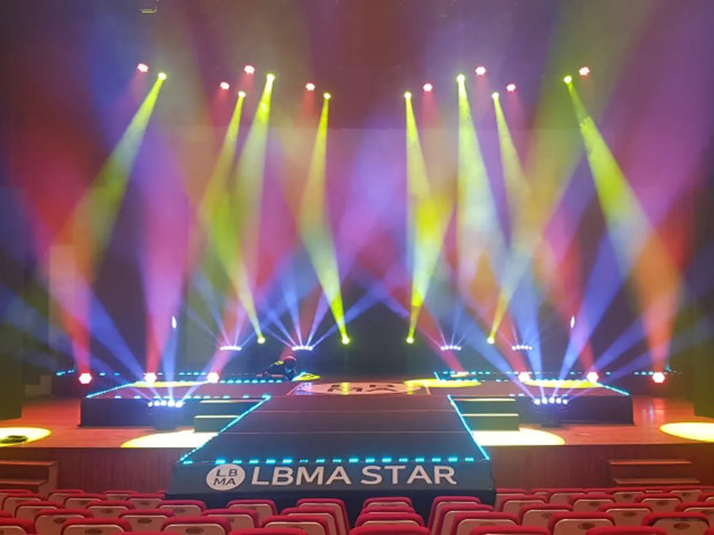
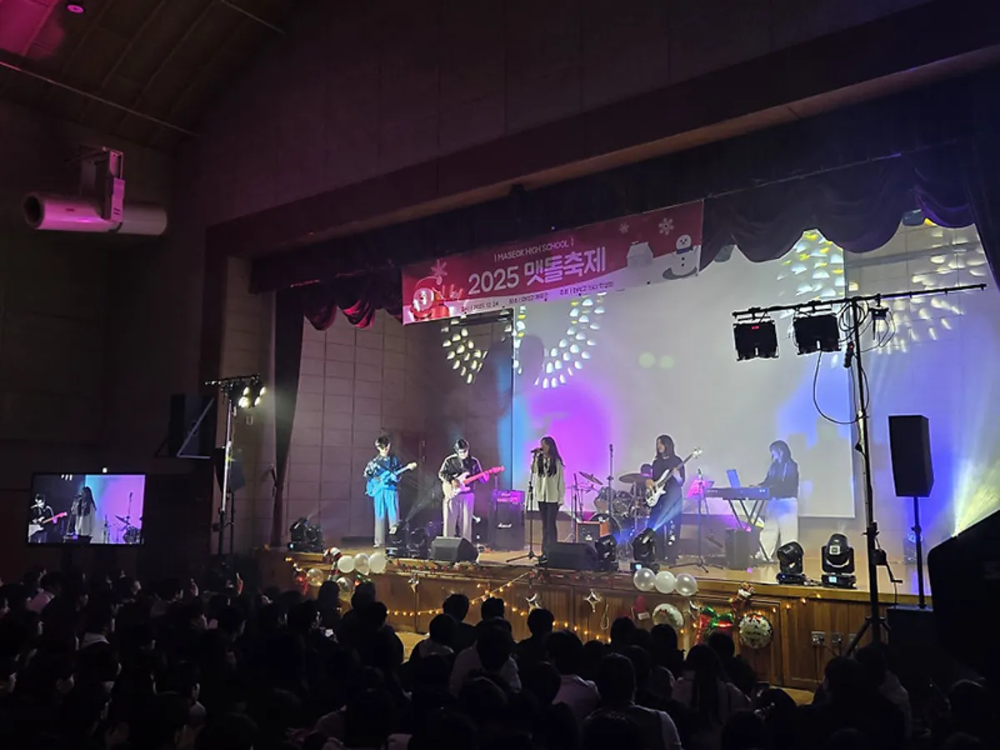

강남 송년회 행사를 준비할 때 가장 먼저 정할 것은 장소의 조건과 식순의 길이입니다. 장소가 무대와 음향을 얼마나 허락하는지, 식사와 시상과 공연을 몇 시간 안에 넣을지가 정해지면 나머지는 따라옵니다. 프로이벤트 서울본사는 강남구 역삼동 778-3 에 있어 강남(역삼동 · 삼성동 · 대치동 · 논현동 · 청담동 등)의 행사장은 본사에서 바로 출발합니다. 이 글은 송년회를 처음 맡은 담당자가 11월 안에 끝내야 할 일을 순서대로 챙기도록 정리했습니다.

- 송년회는 장소 조건(무대 자리 · 전원 · 반입 시간)과 전체 시간을 먼저 정하고 식순을 짭니다.
- 식순은 식사 · 시상 · 공연 · 경품을 번갈아 배치해 집중이 끊기지 않게 합니다.
- 연회장은 소리가 울리기 쉬워 스피커 위치와 무선 마이크 수를 미리 정합니다.
- 견적은 자동 견적서에서 항목을 골라 보내면 담당자가 1영업일 안에 1차 제안과 함께 답합니다.
1. 강남 송년회 행사, 장소 조건부터 확인합니다
송년회 장소는 보통 호텔 · 컨벤션 연회장, 회사 강당이나 대회의실, 대관 레스토랑 가운데에서 고릅니다. 어느 쪽이든 계약 전에 무대를 놓을 자리, 전원 위치, 장비 반입 시간을 확인해야 합니다. 연회장은 앞 행사가 끝나야 세팅이 시작되는 곳이 있어 반입 시간이 짧아질 수 있고, 강당은 무대가 있지만 원탁을 놓기 어렵습니다.
| 장소 | 좋은 점 | 계약 전에 물어볼 것 |
|---|---|---|
| 호텔 · 컨벤션 연회장 | 식사와 행사를 한 곳에서 | 반입 · 세팅 가능 시각, 자체 음향 사용 여부, 천장 높이 |
| 회사 강당 · 대회의실 | 대관 부담이 적음 | 식사 방식, 무대 크기, 객석 고정 여부 |
| 대관 레스토랑 · 홀 | 분위기가 편안함 | 무대 자리, 전원 용량, 소음 제한 시간 |
2. 식순은 2시간 30분 안팎으로 짭니다
송년회가 길어지면 후반부 시상과 경품 추첨 때 자리가 비기 시작합니다. 식사 시간을 포함해 2시간 30분 안팎으로 잡고, 대표 인사처럼 앉아서 듣는 순서 뒤에는 참여하는 순서를 붙입니다. 아래는 저녁 송년회의 예시 식순입니다.
| 시간 | 순서 | 준비할 것 |
|---|---|---|
| 18:00 | 입장 · 포토존 · 오프닝 영상 | 포토존, 오프닝 영상, 입장 음악 |
| 18:20 | 개회 · 대표 인사 · 건배 | 연단 마이크, 건배 멘트 |
| 18:35 | 식사 · 테이블 레크리에이션 | 배경 음악, 테이블 미션 카드 |
| 19:20 | 올해의 시상 | 상장 · 상패, 수상자 명단, 시상 음악 |
| 19:50 | 축하 공연 · 레크리에이션 | 공연팀 리허설, 무선 마이크 |
| 20:20 | 경품 추첨 · 폐회 | 추첨 방식, 경품 목록, 단체 사진 |

3. 시상 · 경품은 명단과 동선이 먼저입니다
송년회 시상에서 가장 흔한 사고는 이름을 잘못 부르거나 수상자가 무대 반대편에 앉아 있는 것입니다. 수상자 명단은 행사 사흘 전까지 확정해 MC 대본과 화면 자막에 같은 글자로 넣고, 수상자 자리는 무대와 가까운 테이블로 배치합니다.
- 수상자 명단: 부서 · 이름 · 상 이름을 한 표로 만들고 읽는 법(한자 이름 · 외래어)을 표시합니다.
- 시상 동선: 수상자 → 무대 왼쪽 계단 → 시상자 → 사진 → 오른쪽으로 내려가는 한 방향으로 정합니다.
- 경품: 추첨 방식(번호표 · 화면 추첨)을 정하고, 큰 경품은 마지막에 둡니다.
- 사진: 시상마다 같은 자리에서 찍도록 무대 위 위치를 바닥에 표시합니다.
4. 연회장 무대 · 음향 · 조명 정하기
연회장은 천장이 낮거나 벽이 단단해 소리가 울리기 쉬운 공간입니다. 스피커를 무대 양옆에만 두면 뒷자리는 웅웅거리고 앞자리는 시끄러워집니다. 객석 크기에 맞춰 스피커 위치를 나누고, 대표 인사 · 시상 · 공연에 쓸 무선 마이크 수를 미리 정합니다. 프로이벤트는 음향 · 조명 · 무대 · LED 를 외주에 맡기지 않고 자체 장비와 자체 인력으로 세팅합니다.
| 장비 | 송년회에서 쓰는 곳 | 확인할 것 |
|---|---|---|
| 음향(라인어레이 스피커 · 디지털 콘솔) | 인사 · 시상 · 공연 전체 | 객석 크기, 스피커 위치 |
| 무선 마이크 | MC · 대표 · 시상자 · 공연 | 동시에 쓰는 개수 |
| 조명(무빙라이트 · 워시) | 시상 · 공연 순서 | 연회장 자체 조명 끄기 가능 여부 |
| LED 전광판 · 스크린 | 오프닝 영상 · 수상자 자막 | 화면 비율, 영상 파일 형식 |
| 특수효과(포그 · 컨페티) | 오프닝 · 마지막 경품 | 연회장 사용 허가 |

5. 강남 송년회 행사 일정표 — 11월에 끝낼 일
연말은 연회장과 공연팀 일정이 동시에 차는 시기입니다. 날짜와 장소를 먼저 잡고, 섭외와 식순은 그다음입니다. 강남 안의 행사장은 강남구 역삼동 778-3 서울본사에서 바로 출발하므로 세팅과 리허설 시간을 넉넉히 잡을 수 있습니다.
- 행사 5~6주 전: 날짜 · 인원 · 예산 범위 확정, 장소 계약.
- 4주 전: 식순 초안, MC · 공연팀 섭외 확정.
- 2주 전: 시상 목록 · 경품 목록, 오프닝 영상 원고.
- 사흘 전: 수상자 명단 · MC 대본 · 화면 자막 확정.
- 당일: 세팅 → 음향 · 조명 리허설 → 본행사 → 철수 · 사진 정리.
6. 송년회 견적 항목표
송년회 견적에 보통 들어가는 항목입니다. 자동 견적서에서 필요한 것을 골라 보내 주시면 담당자가 확인 후 1영업일 안에 1차 제안과 견적으로 답합니다. 금액은 장소 · 인원 · 공연 구성에 따라 달라 상담 때 안내합니다.
| 항목 | 확인할 것 |
|---|---|
| 기업행사(송년회 기획 · 진행) | 식순 · 큐시트 · 현장 운영 |
| 음향 (중형) | 객석 크기, 공연 유무 |
| 무선 마이크 추가 | 동시에 쓰는 마이크 수 |
| 조명 | 시상 · 공연 연출 |
| LED 전광판 | 오프닝 영상 · 자막 |
| 포토존 · 트러스 | 입장 사진 |
| 전문 MC | 진행 · 시상 · 경품 |
| 가수 · 아이돌 그룹 | 축하 공연 |
| 행사 스태프 | 입장 안내 · 시상 동선 |
강남 지역 안내는 강남 행사 안내에 있고, 진행자를 고르는 법은 강남 행사 MC 섭외 글에 따로 정리했습니다.
자주 묻는 질문
연회장에 음향이 있는데 따로 준비해야 하나요?
연회장 음향으로 인사 · 시상만 한다면 충분할 수 있습니다. 공연이나 레크리에이션이 들어가면 객석 크기에 맞춘 스피커와 무선 마이크가 더 필요할 수 있어, 장소 정보를 주시면 함께 판단해 드립니다.
시상식만 따로 진행해 주실 수 있나요?
시상 순서만 맡는 구성도 상담할 수 있습니다. 수상자 명단과 진행 시간을 알려 주시면 MC와 음향 · 조명 구성을 제안합니다.
견적은 언제 받을 수 있나요?
자동 견적서나 문의 폼으로 행사 목적 · 인원 · 날짜를 보내 주시면 담당자가 확인 후 1영업일 안에 1차 제안과 견적으로 답합니다.
강남 밖 연회장도 되나요?
서울 · 경기 어디든 상담합니다. 지역별 이동 시간은 운영 지역 페이지에서 보실 수 있습니다.